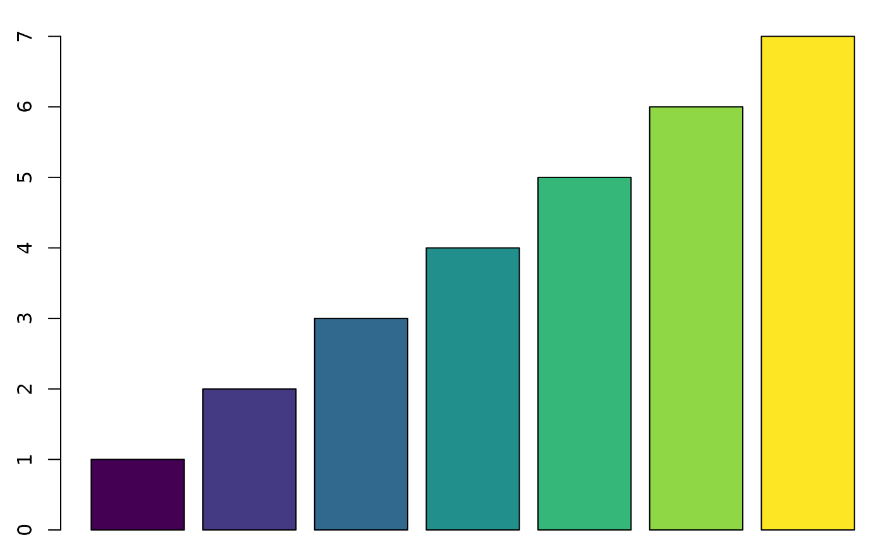
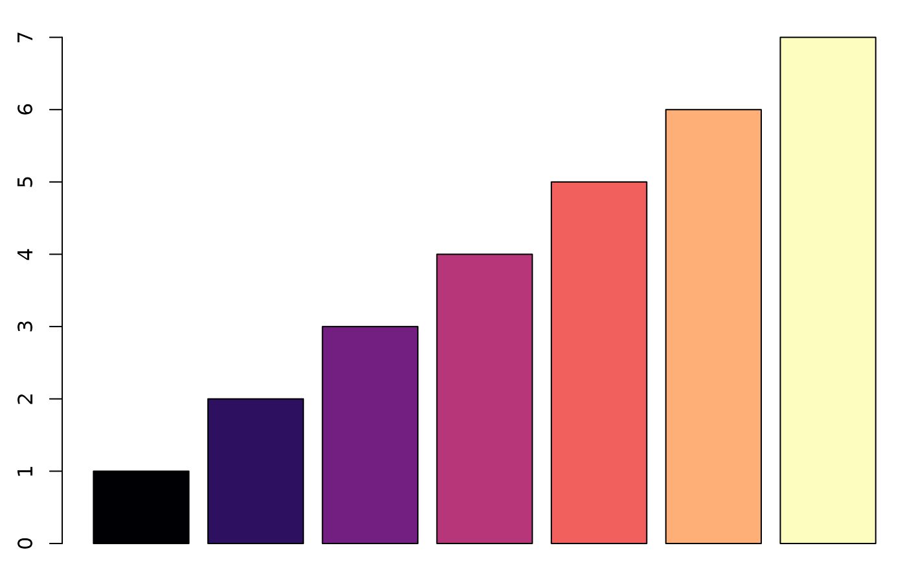
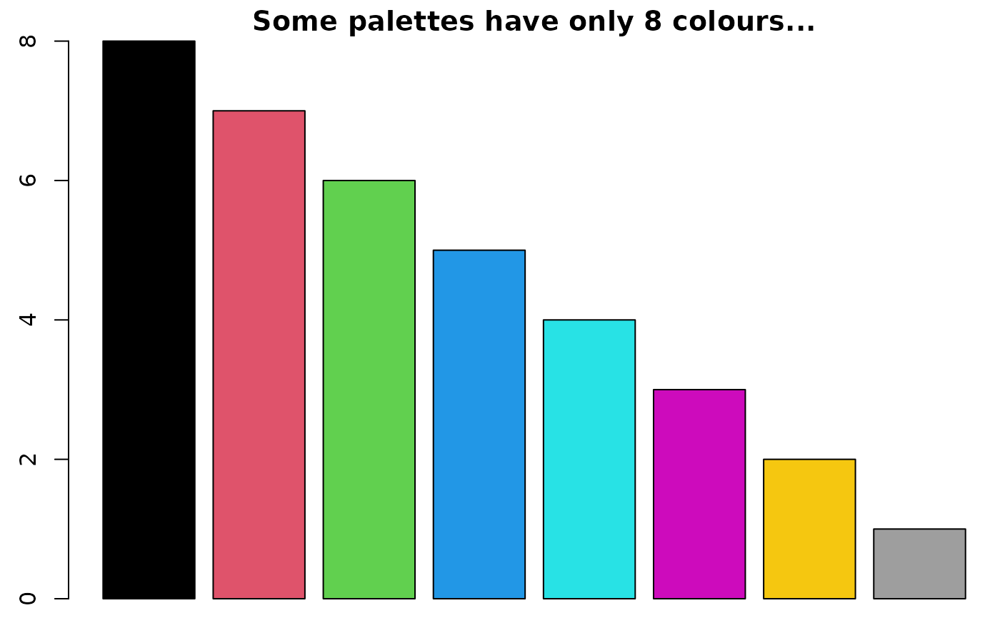
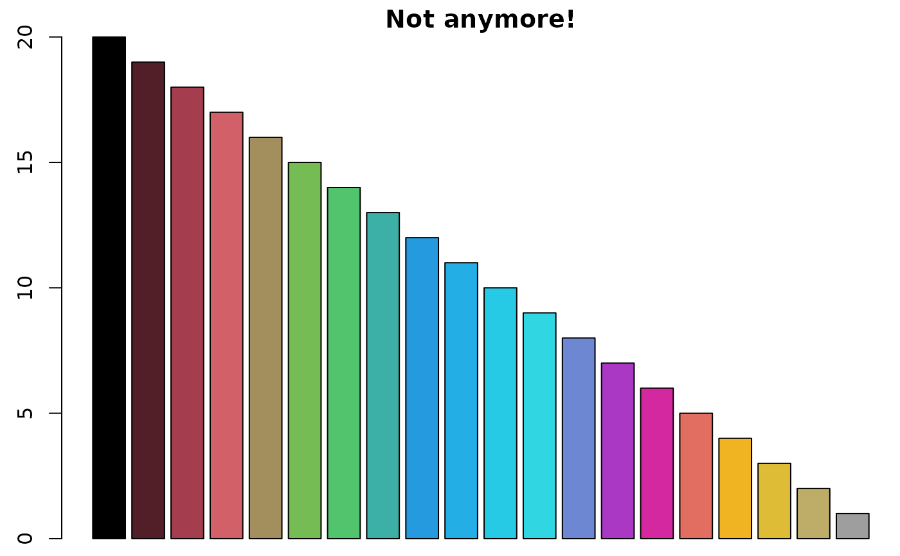
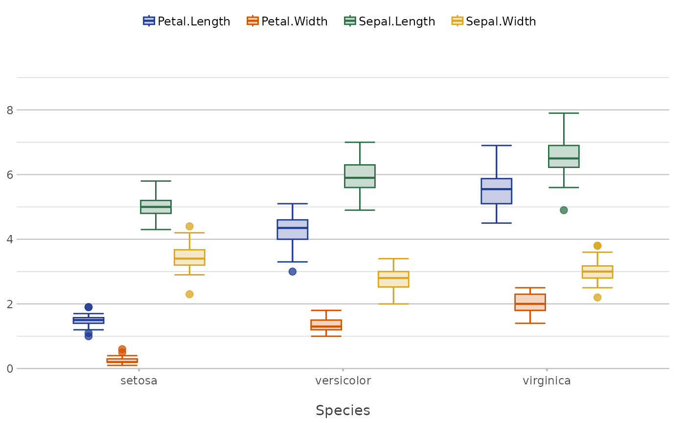

Retrieves, expands, and prints colours or palettes from R, viridisLite, or user-defined sources, with support for registering and unregistering custom colour sets for (automatic) reuse in plots.
Usage
get_colour(x, length = 1, transparency = 0)
register_colour(...)
unregister_colour(regex)
add_white(x, white)Arguments
- x
Colour or colour palette name. Input can be:
One of the colourblind-safe
viridisLitepalettes:"viridis""magma""inferno""plasma""cividis""rocket""mako""turbo"
"ggplot2", which gives the colours that ggplot2 itself would use, i.e. the same as not setting a colourOne of the built-in R palettes from
grDevices::palette.pals(), such as"R4","Okabe-Ito"or"Tableau 10", or one of"topo","heatmap","rainbow","terrain","greyscale","grayscale"One of the built-in
colours()in R (even case-insensitive), such as"bisque","cornsilk4","lightcoral","salmon2","slateblue"One of the pre-registered colours using
register_colour()(case-insensitive)
An invalid colour gives a warning and is replaced by grey, while valid colours and names are kept. A single unknown name, such as a mistyped palette, is replaced by the default colours.
register_colour()gives an error for invalid colours.- length
Size of the vector to be returned.
- transparency
Amount of transparency (0 = solid, 1 = fully transparent).
- ...
Named vectors with known, valid colours. They must be coercible with
get_colour().- regex
A regular expression to unregister colours.
- white
A number between
[0, 1]to add white tox.
Value
get_colour() returns a character vector in HTML format (i.e., "#AABBCC") with new class colour. register_colour() and unregister_colour() are called for their side effect and return NULL invisibly.
Details
Limitless Palette Length
A palette from R will be expanded where needed, so even get_colour("R4", length = 20) will work, despite "R4" only supporting a maximum of eight colours.
Registering Colours In Another Package
To register/unregister colours in another package, add something like this to a package file R/zzz.R:
#' @importFrom plot2 register_colour
.onLoad <- function(...) {
register_colour(
my_colour1 = "#007A8A",
my_colour2 = "#2E8540",
my_colour3 = "#5B3FA8",
my_colours = c("my_colour1", "my_colour2", "my_colour3"))
# set as default upon package load
options(plot2.colour = "my_colours",
plot2.colour_font_secondary = "my_colour1")
}
#' @importFrom plot2 unregister_colour
.onUnload <- function(...) {
unregister_colour("^my_colour") # this is a regular expression
options(plot2.colour = NULL,
plot2.colour_font_secondary = NULL)
}Do not forget to add plot2 to Imports: in the DESCRIPTION file of your package.
Examples
get_colour(c("red", "tan1", "#ffa", "FFAA00"))
#> [1] "#FF0000" "#FFA54F" "#FFFFAA" "#FFAA00"
par(mar = c(0.5, 2.5, 1.5, 0)) # set plot margins for below plots
# all colourblind-safe colour palettes from the famous viridisLite package
barplot(1:7,
col = get_colour("viridis", 7))

barplot(1:7,
col = get_colour("magma", 7))

barplot(8:1,
col = get_colour("R4", 8),
main = "Some palettes have only 8 colours...")

barplot(20:1,
col = get_colour("R4", 20),
main = "Not anymore!")

# Registering Colours --------------------------------------------------
# to register colours, use named input - the values will be evaluated
# with get_colour()
get_colour("red123")
#> Warning: Invalid colour ("red123") replaced with the default colours
#> [1] "#595959"
register_colour(red123 = "red", red456 = "#ff0000", red789 = "f00")
#> 3 colours registered.
get_colour("red123")
#> [1] "#FF0000"
get_colour("red456")
#> [1] "#FF0000"
get_colour("red789")
#> [1] "#FF0000"
# you can also register a group name
register_colour(red_group = c("red123", "ff4400", "red3", "red4"))
#> 1 colour set registered.
get_colour("red_group")
#> [1] "#FF0000"
get_colour("red_group", 3)
#> [1] "#FF0000" "#FF4400" "#CD0000"
# Registering colours is ideal for your (organisational) style in plots.
# Let's say these are your style:
register_colour(navy_blue = "#1F3A93",
burnt_orange = "#D35400",
forest_green = "#2C6F47",
goldenrod_yellow = "#DAA520",
slate_grey = "#708090",
plum_purple = "#8E4585")
#> 6 colours registered.
# Then register the whole colour list too:
register_colour(my_organisation = c("navy_blue", "burnt_orange",
"forest_green", "goldenrod_yellow",
"slate_grey", "plum_purple"))
#> 1 colour set registered.
# Check that it works:
get_colour("my_organisation", length = 6)
#> [1] "#1F3A93" "#D35400" "#2C6F47" "#DAA520" "#708090" "#8E4585"
# Now use it in plots as you like:
iris |>
plot2(x = Species, y = where(is.double), colour = "my_organisation")
#> Using y = c(Petal.Length, Petal.Width, Sepal.Length, Sepal.Width)
#> Using type = "boxplot" since all groups in Species and category contain at least three values
 # Or even set the option to use it in any future plot:
options(plot2.colour = "my_organisation")
iris |>
plot2(x = Species, y = where(is.double))
#> Using y = c(Petal.Length, Petal.Width, Sepal.Length, Sepal.Width)
#> Using type = "boxplot" since all groups in Species and category contain at least three values
# Or even set the option to use it in any future plot:
options(plot2.colour = "my_organisation")
iris |>
plot2(x = Species, y = where(is.double))
#> Using y = c(Petal.Length, Petal.Width, Sepal.Length, Sepal.Width)
#> Using type = "boxplot" since all groups in Species and category contain at least three values

# reset option again
options(plot2.colour = NULL)
# unregister colours with a regular expression on their names
unregister_colour("^red")
#> 4 colours unregistered.
unregister_colour("^my_organisation$")
#> 1 colour unregistered.
# Use add_white() to add white to existing colours:
colours <- get_colour("R4", 6)
colours
#> [1] "#000000" "#DF536B" "#61D04F" "#2297E6" "#28E2E5" "#CD0BBC"
add_white(colours, 0.25)
#> [1] "#3F3F3F" "#E77E90" "#88DB7B" "#59B1EC" "#5DE9EB" "#D948CC"
add_white(colours, 0.5)
#> [1] "#7F7F7F" "#EFA9B5" "#B0E7A7" "#90CBF2" "#93F0F2" "#E685DD"
add_white(colours, 0.75)
#> [1] "#BFBFBF" "#F7D4DA" "#D7F3D3" "#C7E5F8" "#C9F7F8" "#F2C2EE"
add_white("red", 0) # 100% red
#> [1] "#FF0000"
add_white("red", 1/256)
#> [1] "#FF0101"
add_white("red", 1/128)
#> [1] "#FF0202"
add_white("red", 1/64)
#> [1] "#FF0404"
add_white("red", 1/32)
#> [1] "#FF0808"
add_white("red", 1/16)
#> [1] "#FF1010"
add_white("red", 1/8)
#> [1] "#FF1F1F"
add_white("red", 1/4)
#> [1] "#FF3F3F"
add_white("red", 1/2)
#> [1] "#FF7F7F"
add_white("red", 1) # 100% white
#> [1] "#FFFFFF"